Small composed parts: rings, chips, cards, switches, sheets and the toast. 47 in use. Rendered from Storybook on the app background (#f4f4f4). Generated by tools/build-canvases.js; do not edit by hand.
About's hero (`Profile and About.dc.html` § AP/AT/AD): the app, its version, and the belief as the line everything else hangs off.
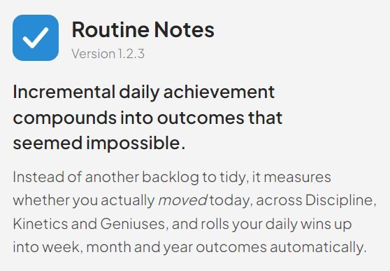
Default
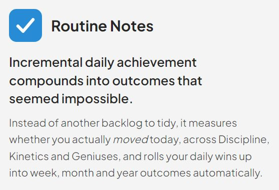
Unknown Version
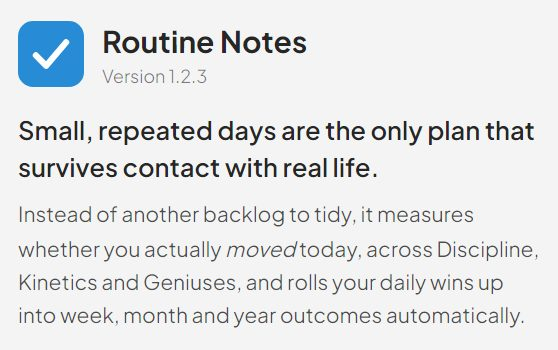
Custom Belief
M02
AppToast
packages/ui/molecules/AppToast
The chassis toast host. One per screen; the page bumps `seq` to replay it.
Success
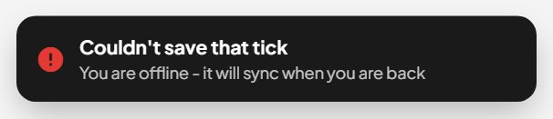
Error
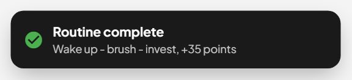
Tablet
M03
CascadeLadder
packages/ui/molecules/CascadeLadder
The cascade ladder — Today → Week → Month → Year → Life (Goals.dc.html).
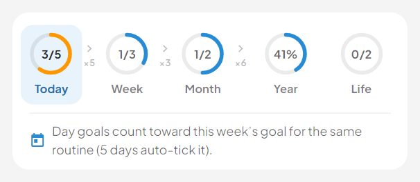
Today Active
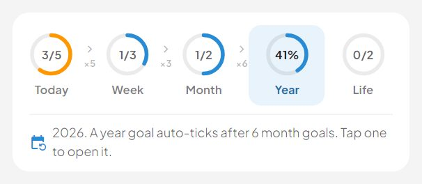
Year Active
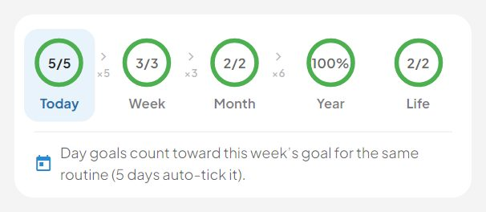
Everything Done
M04
DateSelector
packages/ui/molecules/DateSelector
MoleculeDateSelector - Airbnb-style date selector with support for day, week, month, year, and lifetime periods @example <MoleculeDateSelector v-model="selectedDate" period="day" label="Select Date" />
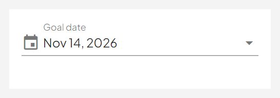
Day Field
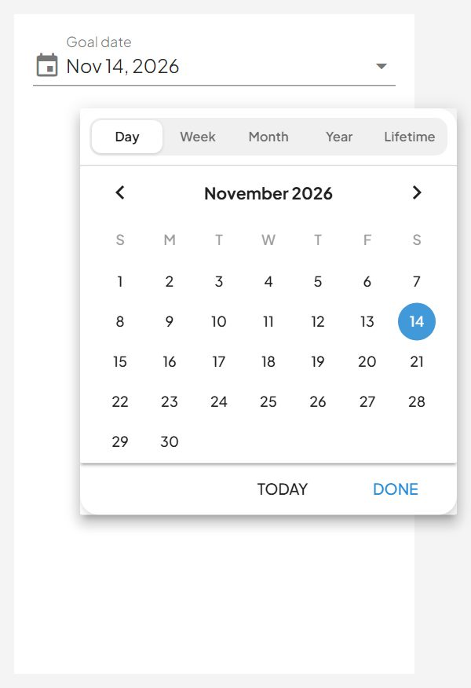
Day Picker Open
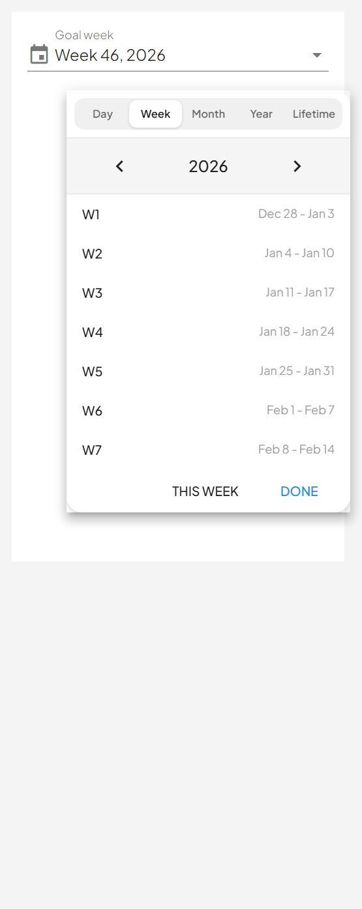
Week Picker Open
M05
DkgRingTrio
packages/ui/molecules/DkgRingTrio
The D/K/G trio: three concentric rings at r 56 / 42 / 28 in a 128-unit box, stroke-width 10 (docs/redesign/chassis.md § Rings).
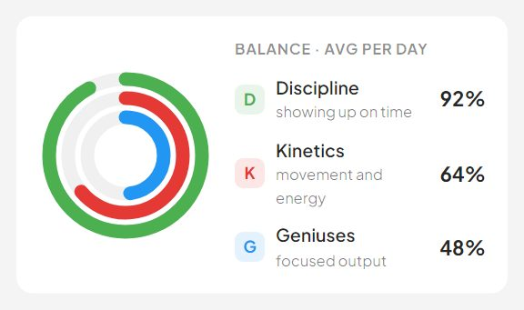
Default
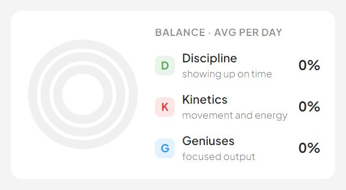
Empty
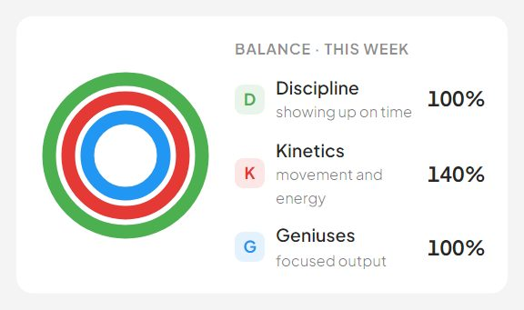
Over Achieved
M06
FocusPointsChip
packages/ui/molecules/FocusPointsChip
The points chip as the focus design draws it: a flat 24/28px pill, not a Vuetify v-chip. `PointsChip` stays the chip for the legacy toolbars — it inherits `#mobileLayout .v-chip` height overrides that would fight the 64px top bar here.
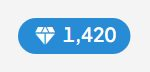
DefaultWith Pending Today
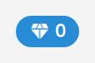
Empty
M07
GettingStartedCard
packages/ui/molecules/GettingStartedCard
"Getting started" (`Profile and About.dc.html` § AP/AT/AD).
Default
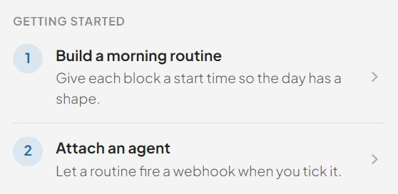
Two Steps
M08
GoalActionMenu
packages/ui/molecules/GoalActionMenu
The ⋮ action sheet. Edit, add a child, delete — the three things that used to be buttons crowding every row and a `v-menu` inside a `v-list-tile-action`. Delete is last and red; nothing here is a primary action.
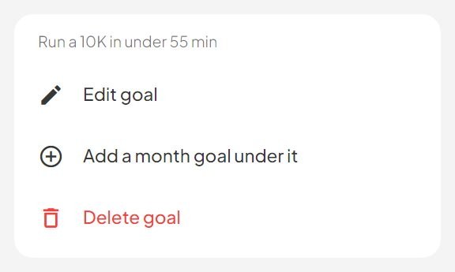
DefaultLong Title
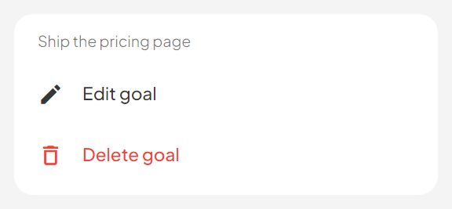
Edit And Delete Only
M09
GoalCalendar
packages/ui/molecules/GoalCalendar
The Goals calendar (Goals.dc.html): a progress RING per day, not "N Goals".
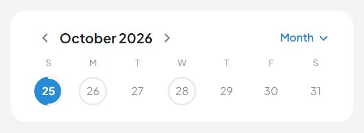
Phone Week Folded
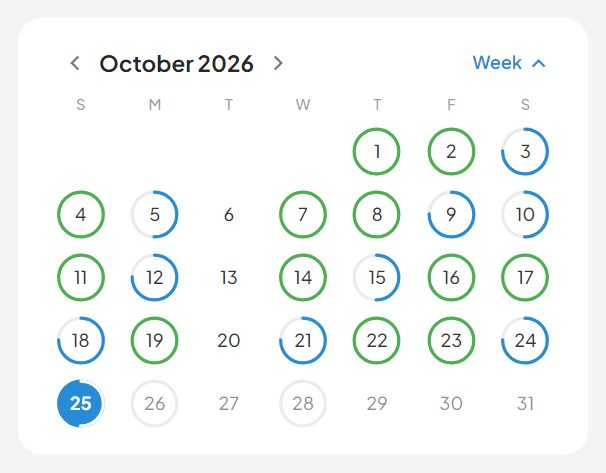
Phone Month Open
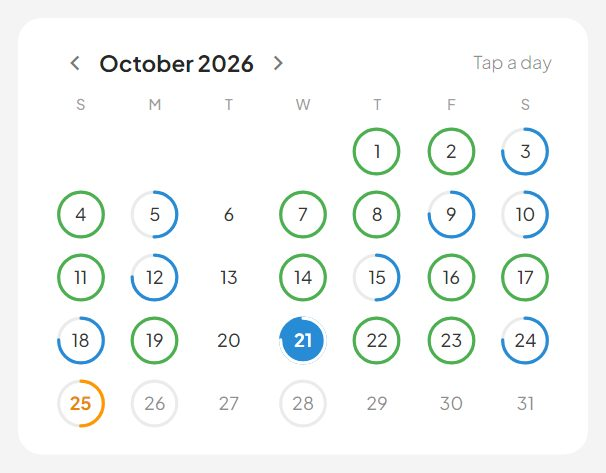
Always Open With Hint
M10
GoalItemMilestoneList
packages/ui/molecules/GoalItemMilestoneList
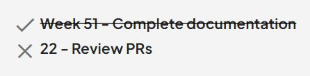
Flat List
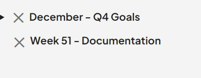
With Nested
M11
GoalItemMilestoneTile
packages/ui/molecules/GoalItemMilestoneTile
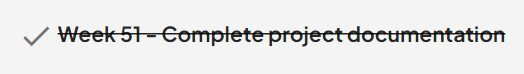
Completed
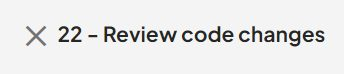
Incomplete
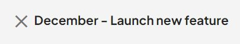
Month Goal
M12
GoalRefSelector
packages/ui/molecules/GoalRefSelector
GoalRefSelector - Dropdown for selecting a goal reference (goalRef) Used for milestone parent selection in goal creation forms This component automatically groups goal items by their routine task (taskRef) using Vuetify's header objects: { header: 'Routine Name' } @example <GoalRefSelector :items="goalItems" :tasklist="routineTasks" v-model="selectedGoalRef" />
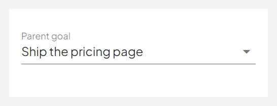
Default
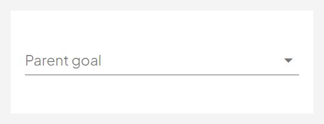
No Goal PickedNo Goals Yet
M13
GoalTagsInput
packages/ui/molecules/GoalTagsInput
Legacy call-site shim for the goal forms. See the script block: this is the old `goalTags` / `userTags` / `update-new-tag-items` contract wired to MoleculeHierarchicalTagInput, so the app has exactly ONE tag editor.
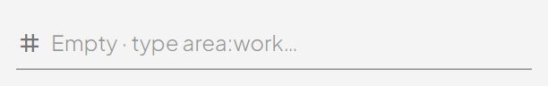
Default
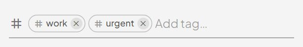
With Existing Tags
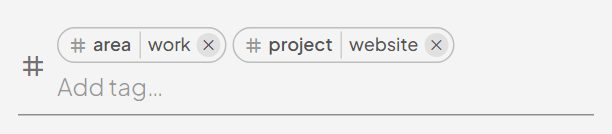
With Area Tags
M14
GoalTaskSelector
packages/ui/molecules/GoalTaskSelector
Array of routine task items Expected structure: [{ id, name, time, tags, ... }] or with taskId: [{ taskId, name, time, tags, ... }]
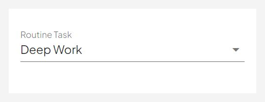
Default
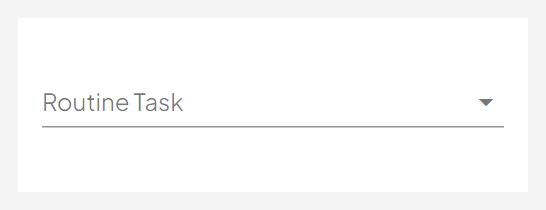
Nothing Selected
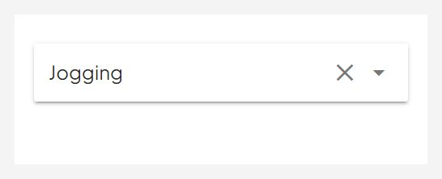
Toolbar Solo
M15
HierarchicalTagInput
packages/ui/molecules/HierarchicalTagInput
The hierarchical `:` tag editor — the one tag input in the app.
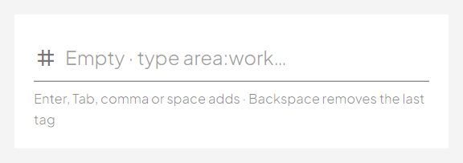
Empty
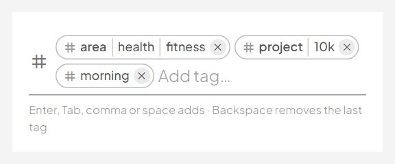
With Tags
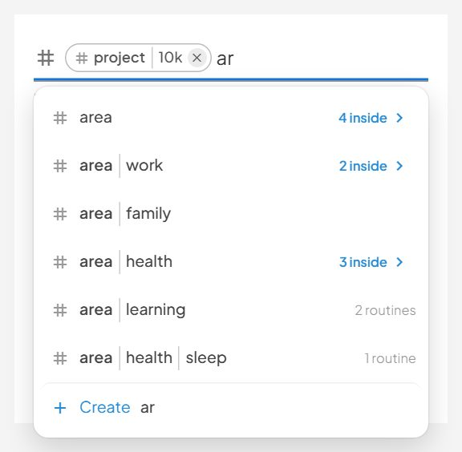
Typing A Top Level Tag
M16
LoadErrorState
packages/ui/molecules/LoadErrorState
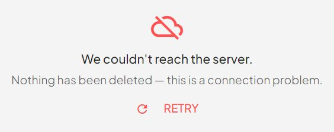
Default
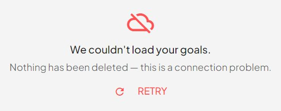
Goals
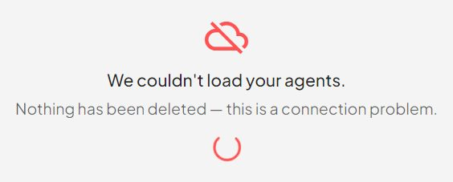
Retrying
M17
MarkdownField
packages/ui/molecules/MarkdownField
A labelled markdown field with an Edit / Preview toggle.
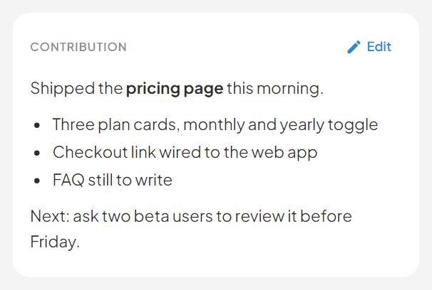
With Contribution
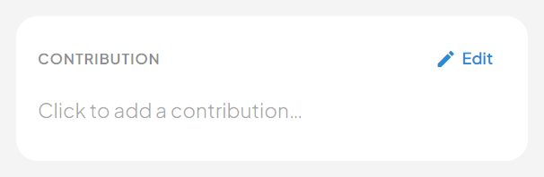
Empty
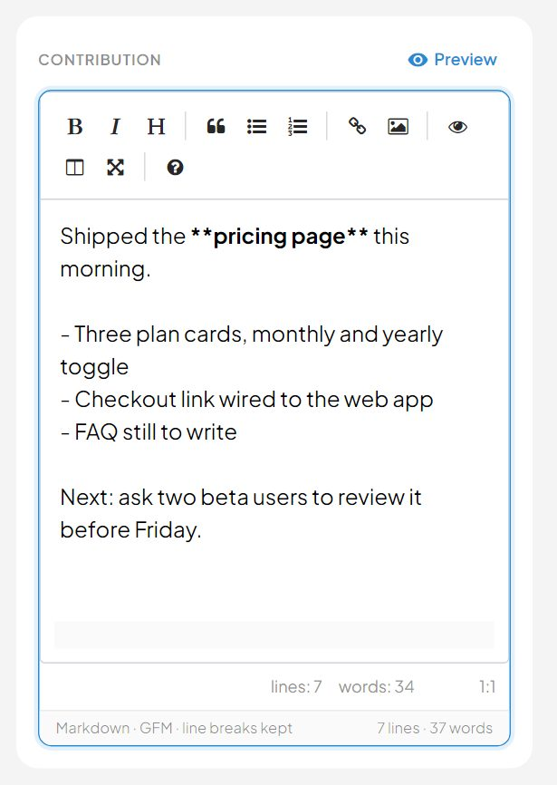
Editing
M18
MiniSparkline
packages/ui/molecules/MiniSparkline
Progress' trend line (docs/redesign/chassis.md, Progress.dc.html).
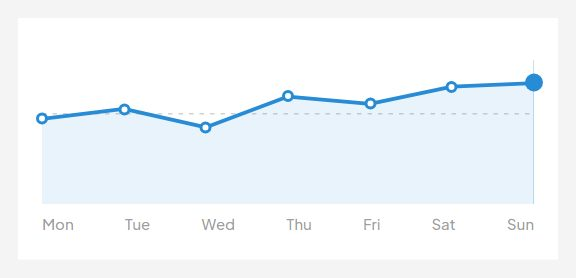
Week
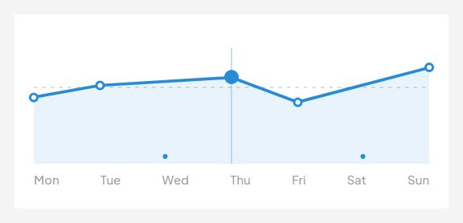
With Gap And SelectionSingle Point
M19
MobileSubDrawer
packages/ui/molecules/MobileSubDrawer
MobileSubDrawer - A secondary bottom-sheet that slides up over the main AiSearchModal bottom-sheet on mobile devices. Used to replace floating dropdown menus (v-select, v-menu) that get misplaced when the mobile keyboard is open. @example <MobileSubDrawer v-model="showDrawer" title="Select Task"> <v-list dense> <v-list-tile v-for="item in items" :key="item.id" @click="select(item)"> <v-list-tile-title>{{ item.name…
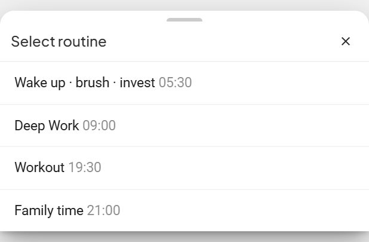
Open
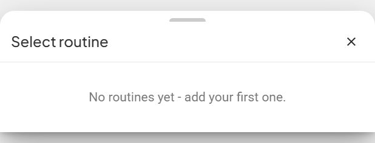
Empty
M20
MonthFocusCard
packages/ui/molecules/MonthFocusCard
The focused month: its own goal, then its weeks as big checklist rows that EXPAND IN PLACE. Tapping a week neither navigates nor opens a modal — it unfolds its 7-day strip and its day rows directly underneath, because the week and its days are one thought and splitting them across screens is what the nested expansion panels got wrong.
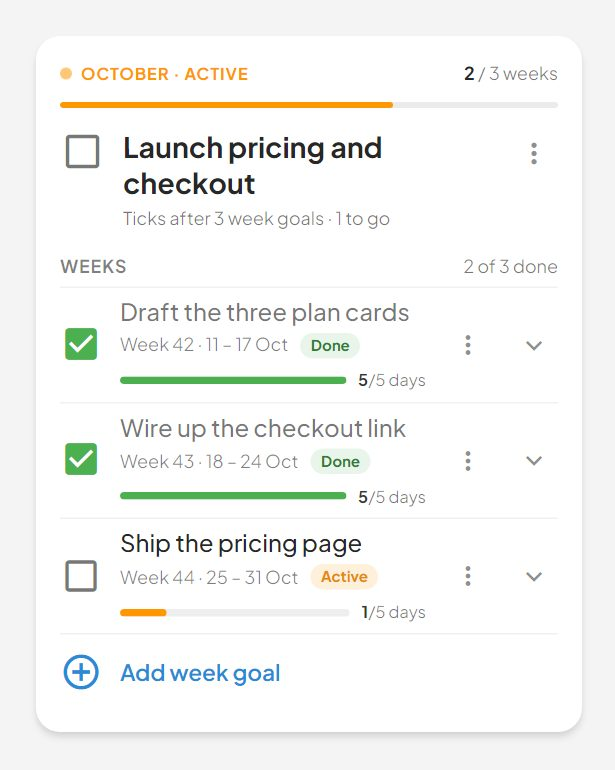
Weeks CollapsedCurrent Week Open
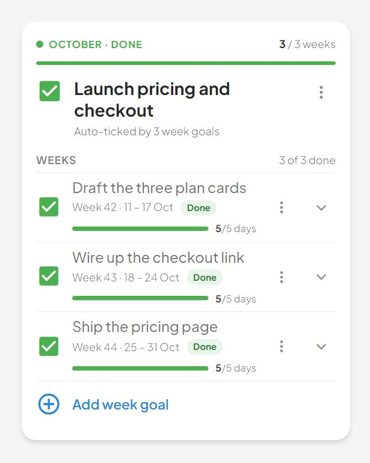
Month Done
M21
PointsChip
packages/ui/molecules/PointsChip
DefaultWith Pending TodayEmpty
M22
PriorityMoveSheet
packages/ui/molecules/PriorityMoveSheet
The ⤧ move picker. One presentation per shell comes free from ResponsiveSheet; Priority overrides the dialog width to 480px (chassis.md § "Sheet vs dialog" — per-page exception).
PhoneTabletDesktop
M23
PriorityQuadrantCard
packages/ui/molecules/PriorityQuadrantCard
One of the FOUR cards tablet and desktop render simultaneously (Priority.dc.html PT/PD frames): a 4px colour cap, a header carrying the open count + done ring, then its own scroller.
DoDelegateEmpty
M24
PriorityTaskList
packages/ui/molecules/PriorityTaskList
One quadrant's items, grouped by routine in time order with a trailing "No routine" bucket; the routine whose window contains now carries the orange NOW badge (Priority.dc.html — the same grouping every list on every screen uses).
DoDelegateAutomate
M25
PriorityTile
packages/ui/molecules/PriorityTile
One cell of the phone 2x2 map (Priority.dc.html, PP frame).
DoPlanDelegate
M26
PriorityTriageCard
packages/ui/molecules/PriorityTriageCard
The triage card (Priority.dc.html): exactly ONE unsorted item at a time, with a ghost card 6px behind at 60% opacity when more are queued.
PhoneLast ItemDesktop
M27
ProfileIdentityCard
packages/ui/molecules/ProfileIdentityCard
Who you are, at the top of Profile (`Profile and About.dc.html` § PP/PT/PD).
DefaultNo StatsPoints Only
M28
ProfileRatesCard
packages/ui/molecules/ProfileRatesCard
The two read-only sections of Profile: the D / K / G point rates and the roll-up chain.
DefaultCustom Rates
M29
ProgressBarGroup
packages/ui/molecules/ProgressBarGroup
"Tasks and Activities Completed" as the redesign draws it: three labelled 6px bars instead of `atoms/TasksCompletedCard`'s v-progress-linear trio (Progress.dc.html § doneRows).
DefaultCompleteUnknown
M30
ProgressHeroCard
packages/ui/molecules/ProgressHeroCard
The Progress hero (packages/design/Progress.dc.html § GP/GT/GD).
UpDownNo Previous Period
M31
ProgressRing
packages/ui/molecules/ProgressRing
The one ring the redesign draws everywhere (docs/redesign/chassis.md § Rings).
DefaultEmptyCurrent
M32
PullToRefresh
packages/ui/molecules/PullToRefresh
Pull down to refresh, for touch screens. Wraps any content; when a downward drag starts while every scroller under the finger (inside this wrapper) is already at its top, an indicator follows the finger down and, released past `threshold`, emits `refresh`. The host does the refetch and reports it back through `refreshing`, which keeps the indicator spinning until it is false.
IdleRefreshingDisabled
M33
RelatedTasksTimeline
packages/ui/molecules/RelatedTasksTimeline
The rows grouped by date, keeping the incoming order (newest day first). Within a day, goals with a routine time come in time order; the rest keep their place after them.
With TasksCompleted TasksMixed Status
M34
ResponsiveSheet
packages/ui/molecules/ResponsiveSheet
One overlay, two presentations — docs/redesign/chassis.md § "Sheet vs dialog". Every design file draws the same sheet twice (phone bottom sheet, tablet / desktop centred dialog), so this is one component with a `shell` prop rather than a sheet and a dialog that drift apart.
PhoneTabletDesktop
M35
RoutineRail
packages/ui/molecules/RoutineRail
Today's routines as a list. Two shapes, one data source: - `rows` (desktop sidebar): 46px rows with time, state icon, name and a stimulus letter pill. - `chips` (iPad mini): 32px horizontally-scrolling pills. Clicking either focuses that routine.
All TickedRowsChips
M36
RoutineRankCard
packages/ui/molecules/RoutineRankCard
"Great going" / "Needs attention" - the top three and bottom three routines by score (Progress.dc.html § good/bad). Replaces the generic `molecules/TableCard` this page used to render twice.
Great GoingNeeds AttentionEmpty
M37
SlidingSwitch
packages/ui/molecules/SlidingSwitch
The segmented control the redesign uses four times: Progress (Day · Week · Month · Year), Profile (12h / 24h), About (5 feature tabs) and the agent event kind (URL / cURL). Two variants, one geometry generalised from Progress:
PeriodsTwelve Twenty FourCompact
M38
StatusRing
packages/ui/molecules/StatusRing
The agent lifecycle ring (Agents.dc.html; chassis § Rings / § Motion).
All StagesWaitingRunning
M39
SubTaskItemList
packages/ui/molecules/SubTaskItemList
DefaultAll CompletedEditable
M40
SubtaskEditor
packages/ui/molecules/SubtaskEditor
SUBTASKS on the goal-item page — progress bar, editable rows, add row.
All DoneIn ProgressEmpty
M41
TimelineEntryEditor
packages/ui/molecules/TimelineEntryEditor
Week EntryMonth EntryYear Entry
M42
TimelineItemList
packages/ui/molecules/TimelineItemList
DefaultEdit ModeDay Goal
M43
TimingReportCard
packages/ui/molecules/TimingReportCard
On the clock: how the period's routine check-ins landed against their windows. The detailed version of the drawer's day ribbon: - the period's on-time rate and one bar split on time / late / missed; - a stacked bar per day (per routine on Day, per month on Year); - the weekday rhythm, coloured by each day's on-time rate; - every routine, the ones slipping first. Pure: props in, `open-routine` out.
WeekWideDay
M44
TimingRibbon
packages/ui/molecules/TimingRibbon
Today on the clock: one segment per routine, in the order the day runs, coloured by how its check-in landed. The next one still to come pulses, so the ribbon reads as "where the day is" as much as "how it went". Under it, the rolling week's on-time rate and its change on the week before.
DefaultSlippingRest Day
M45
YearGoalHero
packages/ui/molecules/YearGoalHero
The hero: ring + title + status chip + ONE rule line, and on the phone the routine chip, the ‹ › goal steppers and the collapsible "ABOUT THIS GOAL".
Phone ActivePhone About OpenPhone Done
M46
YearGoalSidebar
packages/ui/molecules/YearGoalSidebar
DefaultWith Description
M47
YearMonthStrip
packages/ui/molecules/YearMonthStrip
The 12-month strip that replaced the nested expansion panels. Tap a month to focus it; the focus card below is the only place a month's weeks and days live, so there is no second level of accordion anywhere on this page.